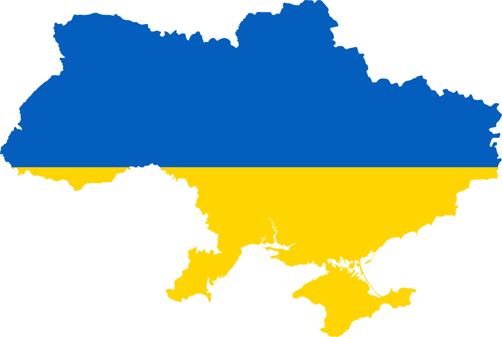
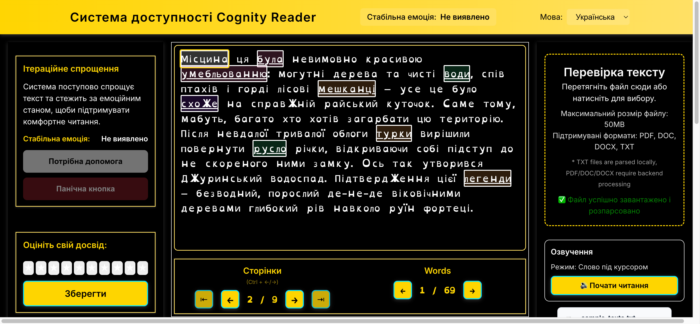

Методи і
алгоритми забезпечення вебдоступності тексту для людей з когнітивними та інтелектуальними
порушеннями
Дисертація на здобуття наукового ступеня доктора філософії
Спеціальність: 121 Інженерія програмного забезпечення
Виконав: Савіцький Роман Святославович
Науковий керівник: д.п.н., проф. Вакалюк Тетяна
Анатоліївна
Житомир – 2026
Шановний голово, шановні члени спеціалізованої вченої ради, шановні колеги! Дозвольте представити
дисертаційне дослідження на тему «Методи і алгоритми забезпечення вебдоступності тексту для людей з
когнітивними та інтелектуальними порушеннями», виконане на здобуття наукового ступеня доктора
філософії за спеціальністю 121 — Інженерія програмного забезпечення у Державному університеті
«Житомирська політехніка» під керівництвом доктора педагогічних наук, професора Вакалюк Тетяни
Анатоліївни. Актуальність дослідження зумовлена тим, що когнітивні та інтелектуальні порушення
охоплюють широкий спектр станів — від синдрому дефіциту уваги та гіперактивності до розладів
аутистичного спектра. За даними Всесвітньої організації охорони здоров'я, понад мільярд людей у
світі мають ту чи іншу форму інвалідності. Для цієї категорії осіб складність текстового контенту є
системним бар'єром, що обмежує можливості в повноцінній участі в суспільному житті. Наявні системи
спрощення тексту переважно реалізують статичний підхід без урахування індивідуального когнітивного
стану конкретного читача в момент взаємодії. Натомість поєднання автоматизованого аналізу тексту з
неінвазивним моніторингом емоційного стану через вбудовану відеокамеру відкриває можливість
реалізувати адаптивне спрощення, що орієнтується на реальний стан конкретного користувача.
Складові дослідження
Об'єкт дослідження — процес забезпечення вебдоступності тексту для людей з
когнітивними та інтелектуальними порушеннями
Предмет дослідження — методи і алгоритми забезпечення вебдоступності тексту для
людей з когнітивними та інтелектуальними порушеннями
Мета — розробка методів та алгоритмів забезпечення вебдоступності тексту для людей
з
когнітивними та інтелектуальними порушеннями
Об'єктом дослідження є процес забезпечення вебдоступності тексту для людей з когнітивними та
інтелектуальними порушеннями. Предметом дослідження є методи і алгоритми забезпечення вебдоступності
тексту для людей з когнітивними та інтелектуальними порушеннями. Мета дослідження полягає у розробці
методів та алгоритмів забезпечення вебдоступності тексту для людей з когнітивними та
інтелектуальними порушеннями.
Завдання дослідження
1
→
Проаналізувати
проблему вебдоступності для людей з когнітивними та інтелектуальними порушеннями,
систематизувати наявні підходи до оцінювання та адаптації текстового контенту і визначити
обмеження наявних рішень для україномовного середовища
2
→
Розробити метод
визначення індексу когнітивної доступності тексту (ІКД), що враховує лексичні, синтаксичні
та структурні характеристики україномовних текстів
3
→
Розробити метод
визначення стабільної емоції розуміння тексту користувачем
4
→
Розробити
узагальнений метод забезпечення вебдоступності тексту для людей з когнітивними та
інтелектуальними порушеннями
5
→
Розробити
алгоритм та програмну реалізацію забезпечення вебдоступності тексту для людей з когнітивними
та інтелектуальними порушеннями, перевірити ефективність
Для досягнення поставленої мети визначено наступні завдання, які представлені на слайді та в
авторефераті, тому дозвольте їх не зачитувати.
Наукова новизна
вперше запропоновано індекс когнітивної доступності тексту як
інтегральний нормований показник, що поєднує лексичний, синтаксичний і компонент читабельності в
єдиній шкалі, адаптованій для української мови та цільової групи користувачів, на відміну від
наявних метрик читабельності, які орієнтовані на англомовні тексти і не враховують специфічних
когнітивних бар'єрів сприйняття
розроблено метод визначення стабільної емоції на основі
розпізнавання виразу обличчя через відеокамеру в реальному часі, що дозволяє використовувати
емоційний стан як індикатор когнітивного навантаження в задачах забезпечення спрощення тексту
розроблено алгоритм та узагальнений метод забезпечення
вебдоступності тексту для людей з когнітивними та інтелектуальними порушеннями, що поєднує статичний
аналіз ІКД з динамічним управлінням на основі стабілізованої емоції та спрощенні тексту
Наукова новизна дисертаційного дослідження полягає в такому. Вперше запропоновано індекс когнітивної
доступності тексту як інтегральний нормований показник, що поєднує лексичний, синтаксичний і
компонент читабельності в єдиній шкалі, адаптованій для української мови та цільової групи
користувачів, на відміну від наявних метрик, орієнтованих на англомовні тексти. Розроблено метод
визначення стабільної емоції на основі розпізнавання виразу обличчя через відеокамеру в реальному
часі, що дозволяє використовувати емоційний стан як індикатор когнітивного навантаження. Розроблено
алгоритм та узагальнений метод забезпечення вебдоступності тексту, що поєднує статичний аналіз ІКД з
динамічним управлінням на основі стабілізованої емоції та ітераційним спрощенням тексту. Сформовано
спеціалізовані словники синонімічних замін лексики окремих категорій для української мови, що
забезпечують лексичну оптимізацію вебконтенту в межах алгоритму спрощення.
Практичне значення
розроблено програмний комплекс забезпечення когнітивної
доступності україномовного вебтексту мовою Python із застосуванням трирівневої архітектури, що
реалізує повний цикл від аналізу когнітивної складності до ітераційного спрощення та може бути
впроваджений як інструмент підтримки читання для осіб з когнітивними та інтелектуальними порушеннями
сформовано спеціалізовані словники синонімічних замін семи
категорій проблемної лексики з детермінованою ієрархією підстановок та морфологічним узгодженням, що
становлять лінгвістичний ресурс, придатний для повторного використання в інших системах обробки
природної мови
розроблено модуль розпізнавання емоційного стану користувача з
двоканальною стабілізацією та програмним калібруванням параметрів на базі телеметричного корпусу, що
може використовуватися як самостійний компонент неінвазивного моніторингу когнітивного навантаження
проведено серію з восьми обчислювальних експериментів, результати
яких підтвердили конвергенцію алгоритму за 1–3 ітерації, збереження семантики та масштабованість
методу
Практичне значення отриманих результатів полягає в тому, що розроблено програмний комплекс
забезпечення когнітивної доступності україномовного вебтексту із застосуванням трирівневої
архітектури, що реалізує повний цикл від аналізу когнітивної складності до ітераційного спрощення.
Розроблено індекс когнітивної доступності як самостійний інструмент кількісного оцінювання
складності тексту, адаптований для морфологічних та синтаксичних особливостей української мови.
Сформовано спеціалізовані словники синонімічних замін семи категорій проблемної лексики з
детермінованою ієрархією підстановок та морфологічним узгодженням. Розроблено модуль розпізнавання
емоційного стану користувача з двоканальною стабілізацією та програмним калібруванням параметрів.
Проведено серію з восьми обчислювальних експериментів, результати яких підтвердили конвергенцію
алгоритму за одну–три ітерації, збереження семантики та масштабованість методу.
Впровадження та апробація
Впровадження
ТОВ "Тієтоеврі Кріейт Україна"
BMK Груп ЮА
Публікації
11 конференцій
(2023–2025): 6 міжнар. + 5 всеукр.
Географія апробації

Житомир
Київ
Львів
Тернопіль
Хмельницький
Черкаси
Дніпро
Запоріжжя
Кривий Ріг
Херсон
Одеса
Переворськ
(Польща)
Результати дослідження впроваджено у практичну діяльність ТОВ «Тієтоеврі Кріейт Україна» та «BMK
Груп ЮА». За темою дисертації опубліковано 15 наукових праць, з яких 4 статті у фахових виданнях
України та 11 тез доповідей. Результати апробовано на 11 наукових конференціях.
Аналіз наявних підходів
Підхід
Пояснюване
Локалізація
Контрольоване
Українська
Емоційний
Формули читабельності (FK, SMOG)✓
✗
✗
✗
✗
Лексико-статистичні ◐
✓
✗
◐
✗
Синтаксичні / правилові ✓
◐
◐
✗
✗
Трансформерні моделі ✗
✓
◐
◐
✗
LLM-спрощення ✗
◐
✗
◐
✗
FER (емоції) ✗
✗
✗
✓
✓
✓ — повна підтримка◐ — часткова✗ — відсутня
Аналіз наявних підходів дозволив встановити, що формули читабельності забезпечують пояснюване
оцінювання, проте не здатні локалізувати конкретні бар'єри та не адаптовані для української мови.
Лексико-статистичні методи забезпечують локалізацію, але лише частково підтримують українську мову.
Трансформерні моделі та LLM-підходи мають високу аналітичну здатність, але не забезпечують
контрольованості та відтворюваності результату. Системи розпізнавання емоцій надають зворотний
зв'язок, але не виконують аналіз тексту.
Індекс когнітивної доступності (ІКД)
Lex (w₁ = 0,40) — лексичний компонент: рідковживані слова, терміни,
абревіатури, сленг, архаїзми, ненормативна лексика
Syn (w₂ = 0,35) — синтаксичний: глибина вкладеності, підрядні конструкції,
довжина ланцюжків залежностей
Read (w₃ = 0,25) — читабельність: FKukr , SMOGukr ,
D-Levelukr (калібровані для української
мови)
Шкала інтерпретації
0.80–1.00
Відмінна доступність
0.60–0.80
Хороша
0.40–0.60
Помірна
0.20–0.40
Низька
0.00–0.20
Відсутня
Ваги визначено методом безпосереднього
оцінювання (10 фахівців, конкордація Кендалла)
В результаті запропоновано індекс когнітивної доступності тексту як інтегральний нормований показник
у діапазоні від нуля до одиниці. ІКД обчислюється як зважена сума трьох компонентів. Лексичний
компонент із вагою 0,40 відображає домінуючу роль незрозумілої лексики як першого бар'єру для
цільової аудиторії. Він оцінює частку проблемних лексем семи категорій відносно загального обсягу
тексту. Синтаксичний компонент із вагою 0,35 оцінює навантаження на робочу пам'ять через глибину
вкладеності дерева залежностей, кількість підрядних конструкцій та довжину ланцюжків залежностей.
Компонент читабельності з вагою 0,25 виконує узагальнювальну функцію оцінки загальної щільності
тексту на основі трьох формул читабельності, перекаліброваних для української мови. Вагові
коефіцієнти визначено методом безпосереднього оцінювання. Групі з десяти фахівців було запропоновано
ранжувати внесок кожного компонента у загальну когнітивну складність тексту. Узгодженість оцінок
перевірено за коефіцієнтом конкордації Кендалла, що підтвердив статистичну значущість отриманого
розподілу ваг. На основі отриманого індексу побудовано п'ятирівневу шкалу інтерпретації значень ІКД
для підтримки прийняття рішень щодо необхідності трансформацій тексту.
Калібровані формули читабельності
Калібрування на корпусі Brown-UK (88
фрагментів, 11 рівнів складності) методом найменших квадратів (OLS)
Калібрування для української мови:
Підрахунок складів за українськими голосними
Токенізація: апострофи, дефіси, абревіатури
Словник простої лексики для D-Level
Валідація (30 фрагментів, 6 жанрів):
Ранговий коефіцієнт Спірмена ρ = 1,0 для всіх трьох формул
Для обчислення компонента читабельності ІКД було виконано калібрацію коефіцієнтів методом найменших
квадратів. Для кожної формули побудовано регресійну модель, де залежною змінною є рівень складності
фрагмента, а незалежними — відповідні текстові ознаки. Усі коефіцієнти значущі на рівні p менше
0,001. Отримані моделі демонструють високу точність апроксимації: FK для української мови з
коефіцієнтом детермінації R-квадрат 0,995 та середньоквадратичною похибкою 0,043; SMOG для
української мови з R-квадрат 0,998 та похибкою 0,028; D-Level для української мови з R-квадрат 0,997
та похибкою 0,032. Незалежну валідацію проведено на окремій підвибірці Brown-UK з 30 фрагментів.
Калібраційний корпус сформовано як стратифіковану підвибірку з корпусу Brown-UK. Він охоплює 88
текстових фрагментів обсягом 200–400 слів, розподілених за одинадцятьма рівнями. Адаптація для
української мови включала підрахунок складів за українськими голосними з евристикою групування
послідовних голосних, коректну токенізацію з урахуванням апострофів, дефісів та абревіатур, а також
побудову словника простої лексики для формули D-Level.
Метод визначення стабільної емоції
Двоканальна стабілізація:
Короткостроковий — швидка реакціяДовгостроковий — підтвердження тенденції
Негативний консенсус: обидва канали фіксують негативний стан → активація
допомоги
ІКД оцінює складність самого тексту, проте для адаптивного спрощення необхідний також зворотний
зв'язок від користувача. Для цього розроблено метод визначення стабільної емоції, який аналізує
вираз обличчя користувача через вбудовану відеокамеру в реальному часі. Введено поняття стійкої
емоції як стабілізованого у часі класифікаційного рішення на основі формули експоненційного
затухання. Метод використовує двоканальну архітектуру стабілізації. Короткостроковий канал
забезпечує швидку реакцію на зміну емоційного стану. Довгостроковий канал підтверджує тенденцію та
запобігає хибним спрацюванням. Запроваджено правило негативного консенсусу: коли обидва канали
одночасно фіксують негативний емоційний стан, система переходить до допоміжного режиму спрощення.
Значення параметрів кожного каналу — коефіцієнт затухання, поріг активації та мінімальна кількість
спостережень — отримано за протоколом програмної калібрації на базі телеметричного корпусу з трьох
серій з аналітичним виведенням коефіцієнтів під обмеження часу реакції та ефективної пам'яті
фільтра.
Лексичні ресурси і потік замін
7 категорій: абревіатури, сленг, терміни, ненормативна, застаріла, складна
та
рідковживана лексика
Морфологічне узгодження: пошук за лемою, автоматичне узгодження відмінка,
числа, роду
Детермінованість результату, незалежність від зовнішніх сервісів, прозорий
аудит
Ключовим рішенням є використання словникового підходу як базового механізму замін. На відміну від
генеративних підходів, словниковий рівень спирається на наперед підготовлені та перевірені варіанти
замін, що забезпечує детермінованість результату, незалежність від зовнішніх сервісів та можливість
прозорого аудиту кожної заміни. Словникова система охоплює сім категорій проблемної лексики, кожна з
яких відповідає окремому типу когнітивного бар'єру. Структура реалізована у двох рівнях. Рівень
першоджерел містить 467 тисяч словоформ і призначений для детекції бар'єрів у тексті. Рівень замін
містить 54 тисячі лем із пріоритизованими варіантами спрощення. Пошук заміни виконується за
ієрархією — від точного збігу словоформи через лематизований пошук до індексного — з автоматичним
морфологічним узгодженням відмінка, числа та роду.
Архітектура конвеєра лексичних замін
Детекція
7 словникових детекторів
→
Пошук заміни
4-рівнева ієрархія словників
→
LLM-резерв
Лише якщо словник ∅
→
Валідація
Морфоузгодження (pymorphy2)
NER-модель (терміни)
ukr-term-detection (RoBERTa)
Навчена на українських фахових текстах · BIO-анотація
Поріг: 0.55 / 0.85ukr-roberta-base
Ієрархія LLM-моделей
Прості категорії Складні категорії
Цільова
MamayLLM (Gemma 2, 9B)
LapaLLM (Gemma 3, 12B)
Альтерн.
Gemma 3 12B · 30с
Gemini 1.5 Flash · 45с
8 критеріїв валідації LLM
дублювання
довжина
морфологія
POS-сумісність
min 2 варіанти
нормалізація
фільтр підрядків
temperature/top_p
Зворотний зв'язок: успішний LLM-результат → переноситься у словниковий кеш →
повторне використання без виклику моделі
Словникові ресурси працюють у складі конвеєра лексичних замін. Обробка кожного тексту проходить
чотири послідовні етапи, і порядок цих етапів принциповий — кожний наступний спирається на результат
попереднього. Перший етап — детекція. Сім словникових детекторів паралельно сканують текст за
відповідними категоріями. Другий етап — пошук заміни у словниках з кешуванням результатів. Третій
етап — LLM-резерв, який активується лише за відсутності словникового кандидата. Четвертий етап —
валідація. Кожний LLM-результат проходить перевірку за вісьмома критеріями, серед яких — контроль
дублювання, довжини, морфології, POS-сумісності, наявності мінімум двох варіантів та фіксація
параметрів генерації. Успішний результат переноситься у словниковий кеш, тож при повторному
зверненні до тієї ж лексеми модель вже не викликається.
Узагальнений метод забезпечення вебдоступності
y* = arg maxy∈Y J(y) = ΔІКД(x, y, S) − λ₁·ΔLen − λ₂·Density − λ₃·SemanticRisk
Аналітичний контур
Модуль трансформацій
Контроль якості
3 режими
Стабільна емоція — контекстний параметр: негативний консенсус → допоміжний
режим
Окремі компоненти — індекс когнітивної доступності, метод стабільної емоції та конвеєр лексичних
замін — об'єднано в узагальнений метод забезпечення вебдоступності тексту. Це керований
параметризований ітераційний процес, формалізований через функціонал корисності J. Функціонал J
максимізує приріст ІКД і водночас накладає три штрафні обмеження: за надмірну зміну довжини тексту,
за високу щільність правок та за ризик семантичного зсуву. Таким чином, метод не просто спрощує
текст, а шукає оптимальний баланс між доступністю та збереженням змісту. Метод працює у трьох
взаємопов'язаних контурах. Аналітичний контур обчислює ІКД і виконує пакетну детекцію бар'єрів семи
категорій з фіксацією їх координат у тексті. Модуль трансформацій реалізує лексичну заміну,
пояснення термінів, синтаксичне спрощення та генеративний резерв. Контроль якості після кожної
ітерації повторно обчислює ІКД, перевіряє семантичну еквівалентність та веде журнал змін.
Архітектура програмного комплексу
Клієнтський рівень
Редактор · пагінація · підсвітка бар'єрів · вибір режиму · TTS
Сервіс аналізу та спрощення
Пакетна детекція · ІКД · ітераційне спрощення · словникові
заміни · синтаксис
Сервіс емоцій
Відеопотік · FER · двоканальна стабілізація · негативний
консенсус
Рівень моделей та ресурсів
NLP-конвеєр · морфоаналіз · 7 словників · термінодетектор ·
LLM-резерв
Далі розглянемо програмну реалізацію. Програмний комплекс побудовано з трирівневою архітектурою, де
кожен рівень виконує чітко визначену функцію. Клієнтський рівень — React-застосунок з редактором
тексту, посторінковою навігацією, підсвіткою виявлених бар'єрів, вибором режиму роботи та синтезом
мовлення. Сервіс аналізу та спрощення — Flask API, що об'єднує обчислення ІКД, ітераційне спрощення
та конвеєр лексичних замін на базі NLP-конвеєра Stanza для української мови. Сервіс емоцій —
незалежний мікросервіс на базі DeepFace, що обробляє відеопотік, розпізнає вираз обличчя та
забезпечує двоканальну стабілізацію з правилом негативного консенсусу. Рівень моделей та ресурсів
охоплює морфоаналізатор pymorphy2, сім категоріальних словників, NER-термінодетектор та LLM-моделі
резервного рівня.
Алгоритм ітераційного спрощення
Три точки входу
document — весь текст; page — видима сторінка; cursor — вікно
1200 символів від позиції
Застосування замін справа-наліво
Зберігає координати решти кандидатів без перерахунку індексів
4-рівнева ієрархія замін
Словник → fallback → POS-фільтрація → морфологічне узгодження
готової словоформи
LLM як резервний рівень
Генерація лише за відсутності словникового кандидата;
результат кешується у словник
Синтаксичне доопрацювання
Після лексичних замін, під окремим контролем з мінімальним
порогом покращення
Алгоритм реалізує узагальнений метод як п'ятиетапний ітераційний процес. Три точки входу
відповідають описаним режимам: документний обробляє весь текст, сторінковий — видиму сторінку,
курсорний — вікно з 1200 символів від позиції користувача. Ключове інженерне рішення — застосування
замін справа-наліво, що зберігає координати ще не оброблених кандидатів без перерахунку індексів.
LLM використовується виключно як резервний рівень за відсутності словникового кандидата, а результат
кешується у словник для повторного використання. Синтаксичне доопрацювання виконується після
лексичних замін під окремим контролем з мінімальним порогом покращення. Відтворюваність результатів
забезпечується кешуванням проміжних обчислень, фіксацією параметрів запуску та журналуванням усіх
застосованих трансформацій.
Сценарії клієнтської взаємодії
Документний режим
Весь текст · steps 5 · max 20 замін · повторна детекція кожні
3 ітерації
Сторінковий режим
Видима сторінка · steps 5 · max 10 замін · диференціація
складності по частинах
Курсорний режим
Вікно 1200 символів від позиції · steps 5 · max 10 замін ·
детекція кожну ітерацію
Емоційний канал
Стабілізована емоція визначає момент запуску наступної
ітерації та активацію допоміжного режиму
Формування контексту
Режим визначає область S, параметри θ та пріоритизацію
кандидатів
Три режими роботи відрізняються насамперед характером взаємодії з користувачем. У документному
режимі система зменшує рівень складності всього документа цілком — це пакетна обробка, де користувач
отримує спрощений результат після завершення циклу ітерацій. Сторінковий режим шукає баланс між
якістю поточної сторінки та підготовкою наступних — система враховує диференціацію складності по
частинах тексту і застосовує попереднє спрощення для сусідніх сторінок. Курсорний режим забезпечує
максимальний фокус на поточному стані користувача — система працює у вікні навколо позиції курсора з
детекцією на кожній ітерації, що дає найвищу точність саме в зоні читання.
Інтерфейс програмного комплексу

1.
Заголовок системи
2. Поле
введення тексту
3.
Параметри спрощення
4.
Область аналізу
5. TTS,
стоп-слова, LLM
6. Текст
із маркуванням
7.
Навігація сторінки
8.
Перевірка тексту
9.
POS-аналіз
10.
Коефіцієнти ІКД
11.
Лінгвістичні метрики
12.
Підвал та посилання
Інтерфейс представлено на екрані. Зліва — основне вікно застосунку, справа — режим високого
контрасту з чорно-білою палітрою для користувачів із порушеннями зору. Редактор використовує
спеціалізований шрифт підвищеної розбірливості зі збільшеним міжлітерним інтервалом — це важливо для
користувачів із дислексією. Проблемні ділянки виділяються кольоровим маркуванням за типом бар'єру.
Підсистема синтезу мовлення на базі Silero TTS озвучує текст українською з синхронною підсвіткою
активного слова у редакторі. Потокова передача дозволяє розпочати відтворення під час синтезу
наступних речень. Також інтегровано модуль клієнтської оцінки досвіду зі збором структурованого
зворотного зв'язку, безпрокруткову посторінкову навігацію, візуалізацію компонентів ІКД та
POS-аналіз.
Експеримент 1: Конвергенція ітераційного спрощення
Контрольований корпус: 10 текстів , 5 категорій
бар'єрів, 35–80 слів
Показник
Значення
Середній ΔІКД
+0,028
Ітерацій до стабілізації
1–3 (сер. 1,8)
Загальна кількість замін
59
Монотонність
10/10 ✓
ІКД монотонно зростає — жодного випадку регресу
Збіжність за 1–3 ітерації — навіть для текстів з максимальною щільністю
бар'єрів (C10: ΔІКД = +0,045)
Домінування архаїзмів — 49% замін (7 428 записів у словнику)
Ефективність запропонованого методу перевірено серією з восьми експериментів на контрольованому
корпусі з десяти україномовних текстів різних жанрів та рівнів складності. Перший експеримент
перевіряв збіжність ітераційного алгоритму. Метод перевірки — багаторазовий прогін алгоритму на всіх
десяти текстах корпусу з фіксацією значення ІКД після кожної ітерації та перевіркою монотонності
послідовності. ІКД монотонно зростає або залишається незмінним між послідовними ітераціями у всіх
десяти текстах — жодного випадку регресу. Алгоритм досягає стабільного стану за одну–три ітерації із
середнім значенням 1,8 ітерації на текст.
Експеримент 2: Семантична еквівалентність
Показник
Значення
Середня подібність
0,918
Діапазон
0,802 — 0,966
Текстів > 0,90
7 / 10
Текстів > 0,95
4 / 10
Всі значення > 0,80 — зміст зберігається
C09: 0,802 — розшифрування абревіатур змінює форму, не зміст
Кореляція: замін ↑ → подібність ↓ (r = −0,32)
Другий експеримент дозволив перевірити збереження змісту тексту після спрощення. Всі отримані
значення утримуються в діапазоні високої семантичної еквівалентності.
Експеримент 3: Чутливість до параметрів
Поріг впевненості (0,3–1,0) — результат
ідентичний , 6/7 детекторів словникові
Максимум ітерацій (1–10) — 1 ітерація → 67%;
від 3
— плато (100%)
Замін за ітерацію (1–50) — 1 заміна/ітер. →
компенсація, результат 94%
Внутрішня стійкість: ітераційний механізм компенсує обмеження окремих
параметрів
Третій експеримент оцінював стійкість алгоритму до зміни конфігурації. Метод — це почергове
варіювання трьох параметрів: порогу впевненості детекторів, кількості ітерацій та кількості замін за
ітерацію. Поріг впевненості практично не впливає на результат: при зміні від 0,3 до 1,0 кількість
замін та приріст ІКД залишаються незмінними, оскільки шість із семи детекторів є словниковими.
Експеримент 4: Крос-жанрова стійкість
Група
Сер. ΔІКД
Прості (n=2)
+0,032
Середні (n=3)
+0,024
Складні (n=5)
+0,030
Категорій
Сер. ΔІКД
Замін
1–2
+0,018
2,7
3
+0,027
8,0
4+
+0,034 8,5
Монотонна тенденція: більше категорій → вищий ΔІКД завдяки
пріоритетному механізму
Четвертий експеримент перевіряв універсальність алгоритму. Метод — аналогічно до першого
експерименту, результати згруповано за жанром, рівнем складності та кількістю категорій бар'єрів.
Алгоритм забезпечує позитивний приріст ІКД для всіх десяти текстів незалежно від жанру. В результаті
встановлено, що тексти з більшою кількістю категорій демонструють вищий приріст ІКД завдяки
пріоритетному механізму обходу типів.
Експеримент 5: Масштабованість алгоритму
Компонент
Складність
Повний цикл
O(n1.30 )
Обчислення ІКД
O(n1.39 )
Детекція бар'єрів
O(n0.98 ) ≈ лінійна
355 слів → 55 с (повний цикл спрощення)
Детекція лінійна — словниковий пошук
> 1000 слів → сторінковий або курсорний режим
П'ятий експеримент оцінював масштабованість алгоритму. Метод — тиражування тексту C10 з максимальною
щільністю бар'єрів за коефіцієнтами від 1 до 20, що дає обсяг від 71 до 1420 слів, з вимірюванням
часу трьох компонентів обробки: ІКД, детекція та повний цикл.
Експеримент 6: Вплив на синтаксичну складність
Метрика
Δ (середнє)
Глибина дерева залежностей
+0,10
Підрядні конструкції
зміна у 2 / 10
Довжина речення
+0,73 слова
Структура збережена — глибина дерева майже не змінилась
Довші речення — розшифрування абревіатур (C09: +4,2)
Спрощення не змінює логічні зв'язки
Шостий експеримент перевіряв збереження синтаксичної структури після лексичного спрощення. Метод —
порівняльний аналіз трьох синтаксичних метрик до та після спрощення за допомогою NLP-конвеєра Stanza
для української мови з модулем розбору залежностей. Середня глибина дерева залежностей практично не
змінилася. Кількість підрядних конструкцій змінилася лише у двох з десяти текстів на одну одиницю.
Експеримент 7: Стабільність емоційного тону
Показник
Значення
Збережено тональність
10 / 10 ✓
Максимальне відхилення
0,090
Нейтральних
7
Негативних
3
Жоден текст не змінив категорію тональності
Зміщення до нейтральності (Δ = +0,070) — ефект заміни стилістичної лексики
Спрощення не спотворює ні зміст, ні тональність
Сьомий експеримент перевіряв збереження тональності тексту. Метод — аналогічно до другого
експерименту, із застосуванням мультимовної моделі аналізу тональності на базі XLM-RoBERTa, навченої
на ста мовах включно з українською, з класифікацією за трьома категоріями: негативна, нейтральна,
позитивна. Жоден з десяти текстів не змінив категорію тональності після спрощення. У поєднанні з
результатами другого та шостого експериментів це підтверджує, що спрощення не спотворює ні зміст, ні
синтаксис, ні тональність оригінального тексту.
Висновки (1/2)
Проведений комплексний аналіз наявних методів оцінювання
та адаптації текстового вебконтенту для людей з когнітивними та інтелектуальними порушеннями
дозволяє стверджувати, що класичні індекси читабельності (Flesch–Kincaid, Gunning Fog, SMOG)
не забезпечують діагностичної повноти для виявлення когнітивних бар'єрів і є непридатними
для морфологічно складних мов, зокрема української. Наявні рішення залишаються
фрагментарними та мовно залежними, що обґрунтовує доцільність гібридного підходу з
поєднанням правилових, статистичних та нейромережевих компонентів із вимогами
інтерпретованості, локалізації бар'єрів та мовної адаптивності.
Розроблено метод визначення індексу когнітивної
доступності тексту (ІКД) як інтегрального нормованого показника у шкалі [0; 1] з поєднанням
лексичного, синтаксичного компонентів та компонента читабельності з емпірично верифікованими
ваговими коефіцієнтами. Побудовано п'ятирівневу шкалу категоризації текстів від «Відмінна
доступність» до «Дуже складний текст». Серія з восьми обчислювальних експериментів на
корпусі з десяти текстів підтвердила коректну фіксацію покращення когнітивної доступності
індексом ІКД (10/10 текстів), тоді як класичні індекси читабельності не зафіксували жодного
покращення (0/10).
Розроблено метод визначення стабільної емоції розуміння
тексту користувачем на основі розпізнавання виразу обличчя через відеокамеру в реальному
часі. Формалізовано модель часової стабілізації з чотирма незалежними каналами агрегації
(короткостроковий та довгостроковий для емоцій і станів) та правилом негативного консенсусу.
Значення параметрів кожного каналу (коефіцієнт затухання, поріг активації, мінімальна
кількість спостережень) отримано за протоколом програмної калібрації на базі телеметричного
корпусу з трьох серій з аналітичним виведенням коефіцієнтів під обмеження часу реакції та
ефективної пам'яті фільтра.
На підставі проведеного дослідження сформульовано висновки, що представлені на слайді та у
авторефераті, тому дозвольте їх не зачитувати.
Висновки (2/2)
Розроблено метод забезпечення вебдоступності тексту як
керований ітераційний процес з поєднанням оцінювання якості за ІКД, детекції бар'єрів,
побудови трансформацій та контролю семантичної еквівалентності. Метод реалізує ієрархічну
систему пріоритетів обробки семи категорій когнітивних бар'єрів з детермінованою
чотирирівневою ієрархією замін та морфологічним узгодженням на базі спеціалізованих
словників для когнітивної адаптації україномовного тексту. Гібридна LLM-інтеграція
забезпечує резервний рівень генерації за відсутності словникового кандидата.
Здійснено програмну реалізацію методу як
браузерного комплексу з трирівневою архітектурою та адаптивним інтерфейсом із синтезом
мовлення, синхронною підсвіткою та безпрокрутковою навігацією відповідно до вимог WCAG 2.2.
Проведено серію з восьми обчислювальних експериментів.
На підставі проведеного дослідження сформульовано висновки, що представлені на слайді та у
авторефераті, тому дозвольте їх не зачитувати.
Методи і
алгоритми забезпечення вебдоступності тексту для людей з когнітивними та інтелектуальними
порушеннями
Дисертація на здобуття наукового ступеня доктора філософії
Спеціальність: 121 Інженерія програмного забезпечення
Виконав: Савіцький Роман Святославович
Науковий керівник: д.п.н., проф. Вакалюк Тетяна
Анатоліївна
Житомир – 2026
Шановний голово, шановні члени спеціалізованої вченої ради, шановні колеги! Дозвольте представити
дисертаційне дослідження на тему «Методи і алгоритми забезпечення вебдоступності тексту для людей з
когнітивними та інтелектуальними порушеннями», виконане на здобуття наукового ступеня доктора
філософії за спеціальністю 121 — Інженерія програмного забезпечення у Державному університеті
«Житомирська політехніка» під керівництвом доктора педагогічних наук, професора Вакалюк Тетяни
Анатоліївни. Актуальність дослідження зумовлена тим, що когнітивні та інтелектуальні порушення
охоплюють широкий спектр станів — від синдрому дефіциту уваги та гіперактивності до розладів
аутистичного спектра. За даними Всесвітньої організації охорони здоров'я, понад мільярд людей у
світі мають ту чи іншу форму інвалідності. Для цієї категорії осіб складність текстового контенту є
системним бар'єром, що обмежує можливості в повноцінній участі в суспільному житті. Наявні системи
спрощення тексту переважно реалізують статичний підхід без урахування індивідуального когнітивного
стану конкретного читача в момент взаємодії. Натомість поєднання автоматизованого аналізу тексту з
неінвазивним моніторингом емоційного стану через вбудовану відеокамеру відкриває можливість
реалізувати адаптивне спрощення, що орієнтується на реальний стан конкретного користувача.